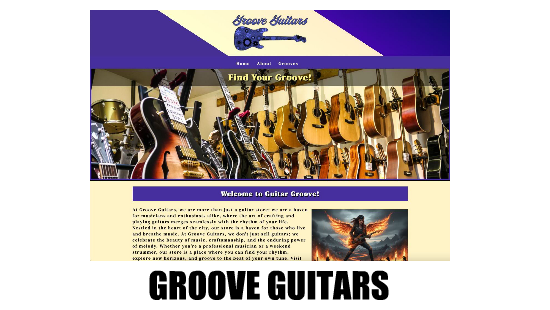
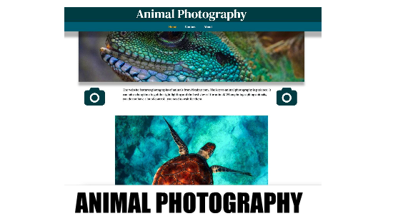
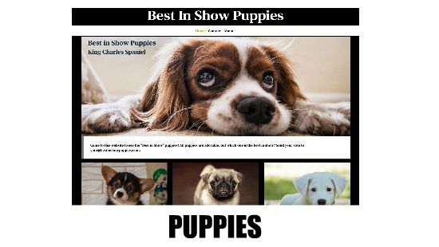

I built this website while taking the Web Fundamentals class at Saint Paul College.
The project helped me practice the basics of web development in a real way.
The website focuses on guitars and places where people can find them.
It shares useful information for beginners and guitar lovers.
I used HTML and CSS to structure and style the pages.
The site was designed to be simple and easy to navigate. This project helped me understand how websites are built from scratch. It also strengthened my interest in web design and development.

This website was created by me as part of the Web Fundamentals class at Saint Paul College.
It focuses on an animal image panorama with an interactive display.
Users select a smaller image from a gallery of animals.
The selected image is then displayed in a larger main view.
Java was used to handle the image selection and display logic. The project helped me understand how interactivity works on websites. It improved my skills in working with images and user actions. Overall, the site strengthened my understanding of Java-based web functionality.

This website was created by me as part of the Web Fundamentals class at Saint Paul College.
It focuses on displaying puppies in a fun, friendly, and visually engaging way.
The project showcases different puppies using images and basic details.
HTML and CSS were used to structure and style the content.
The project introduced me to Bootstrap for the first time.
Bootstrap was used to create responsive and flexible layouts. The design is clean and easy to navigate across different devices. Overall, the project strengthened my front-end web development skills.
This website was created by me as part of the Web Fundamentals class at Saint Paul College.
It was designed to help me learn the basics of HTML and CSS.
The project focused on structuring web pages using HTML elements.
CSS was used to style content and control layout and appearance. Through this site, I learned how to link stylesheets and apply styles properly. The project helped me understand how websites are built from the ground up. It strengthened my foundation in front-end web development. Overall, it gave me confidence to build more advanced websites.